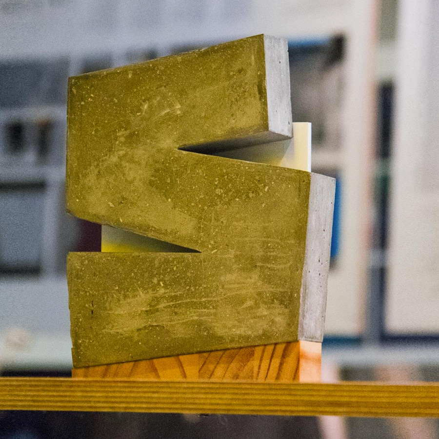

EL STONE AND WOOD 2019

El Stone and Wood es un premio de diseño que otorga la ciudad de Bilbao. Forjado en sólida roca y sutil madera, el premio nació para reconocer el talento y la creatividad. Desde hace cuatro ediciones, Stone and Wood promociona a profesionales y new talents dentro de la industria del diseño. Durante el evento de dos días en Bilbao, los asistentes votan los mejores trabajos para seleccionar los mejores proyectos. La ceremonia de entrega del Stone and Wood se realiza en el hall principal, un reconocimiento especial a la labor y el buen trabajo.
JURADO
El pasado 4 de julio, 17 profesionales del mundo del diseño se reunieron en el entorno creativo de Bilbao Arte. Fueron el jurado de 2019 y se reúnen para evaluar y seleccionar los 22 proyectos que se presentarán en la edición SELECTED 2019.